Menu típico nordestino no café da manhã, almoço e jantar, em bufê, ambiente charmoso e acolhedor com varanda.
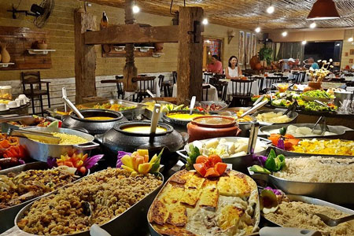
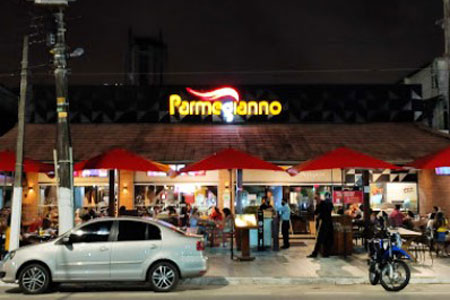
Restaurante Parmegiano
Bairro: Pajuçara
Restaurante italiano com destaque às parmegianas, peixes e pizzas ao forno, sobremesas e atmosfera familiar.
Ottimo
Bairro: Pajuçara
Gastronomia expressa italiana de massas variadas com molhos caseiros, em ambiente descontraído de lanchonete.
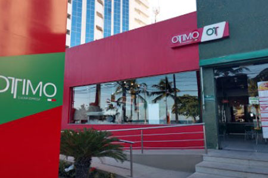
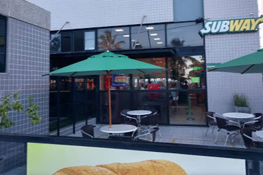
Subway
Bairro: Pajuçara
Rede de fast-food onde você monta seus próprios lanches e saladas.
Imperador dos Camarões (Praia)
Bairro: Pajuçara
Culinária voltada ao camarão, com opções de porções e pratos vistosos, em espaço estiloso e moderno com bar.
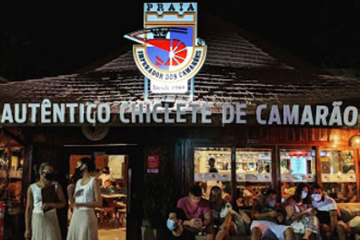
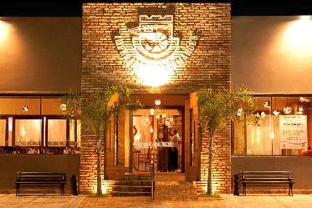
Imperador dos Camarões
Bairro: Pajuçara
Camarões, casquinhas de siri, bacalhau e mais, em espaço descontraído, com área externa e vista do mar.
759 Parrilla
Bairro: Pajuçara
Carnes grelhadas na parrilla argentina, além de sandubas e drinques, em espaço contemporâneo na orla marítima.
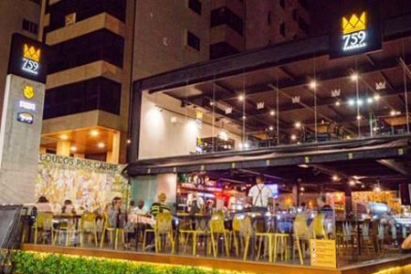
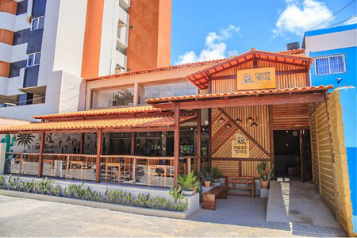
Cheiro da Terra
Bairro: Pajuçara
Pratos fartos com foco na culinária local, destaque às torradas de queijo coalho e carne-seca, clima simples.
Grazie Pizza Napoletana
Bairro: Pajuçara
Autêntica pizzaria Napoletana, isto significa que produzimos pizzas de uma forma muito especial, com um sabor único e cheio de leveza, por isso as Pizzas Napoletanas foram tombadas pela UNESCO como patrimônio Imaterial e Cultural da Humanidade.
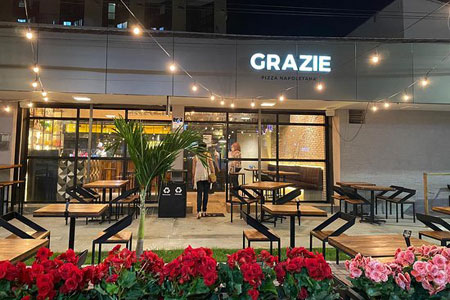
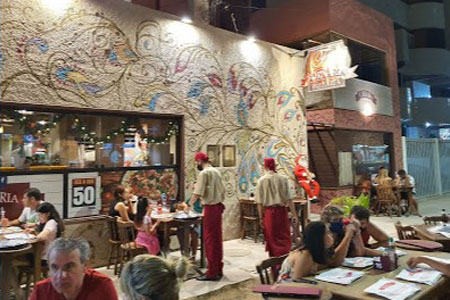
Fornaria
Bairro: Pajuçara
Fornaria serve pizzas variadas, com opção de borda recheada, e doces italianos finos, em ambiente familiar.
Piccola Villa
Bairro: Pajuçara
Além de pizzas artesanais, a casa serve massas e vinhos em espaço rústico e descontraído com arte e plantas.
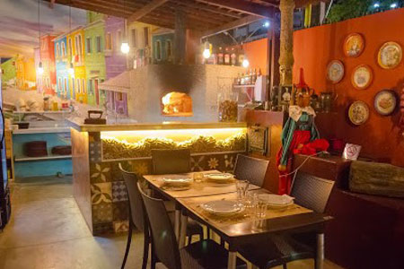
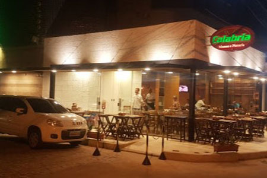
Calabria Massas e Pizzaria
Bairro: Poço
A casa serve pizzas artesanais, massas e carpaccios, em ambiente informal com varanda e espacinho para festas.
Budega da Macaxeira
Bairro: Poço (Conj. Santo Eduardo)
Pratos típicos da cozinha nordestina com destaque às porções, drinques e sobremesas, em clima descontraído.
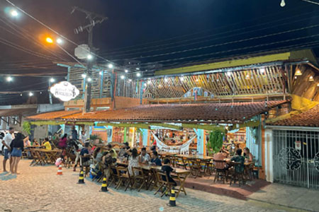
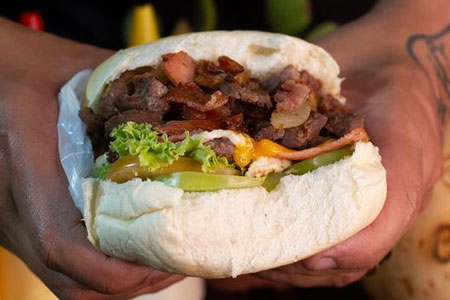
Passaporte do Careca
Bairro: Poço (Conj. Santo Eduardo)
Lanches fartos, destaque ao sanduíche de picanha argentina e de frango, bebidas, ambiente simples e delivery.
Massaguerinha
Bairro: Ponta Verde
A culinária regional seleta de frutos do mar servida em ambiente descontraído de boteco com mesas externas.
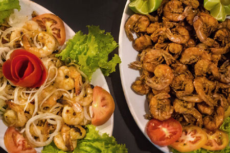
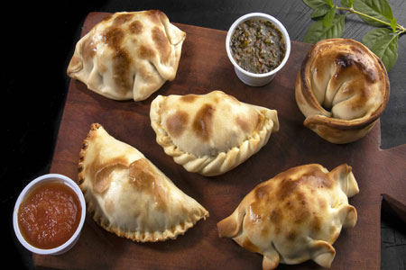
La Empanada
Bairro: Jatiúca
As tradicionais empanadas argentinas.
Espetinho Rio Sampa (Food Truck)
Bairro: Ponta Verde
Espetinhos de variados num ambiente ao ar livre, descontraído e informal.
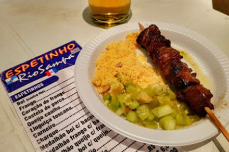
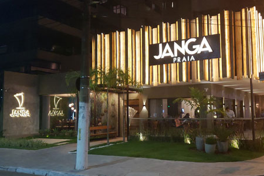
Janga Restaurante
Bairro: Ponta Verde
Culinária regional gourmet que compõe frutos do mar, carnes e saladas.
Anamá Restaurante
Bairro: Ponta Verde
Culinária regional gourmet, com self-service no almoço e café, além da vista privilegiada para a Ponta Verde.
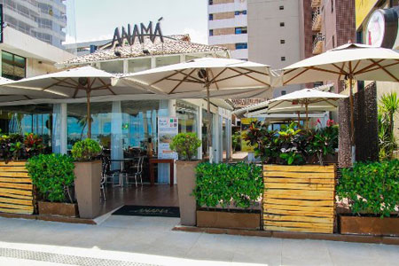
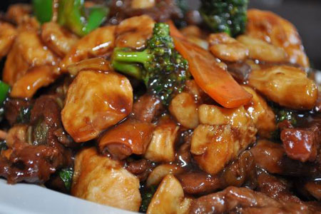
China In Box
Bairro: Ponta Verde
Rede de fast-food de comida chinesa para delivery em caixas personalizadas ou consumo em ambiente informal.
Wanchako
Bairro: Jatiúca
Ceviche, polvo e mais em espaço peruano com paredes de tons quentes, cadeiras de fibras naturais e artesanato.
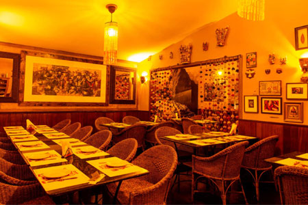
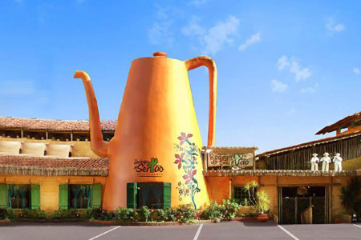
Bodega do Sertão
Bairro: Jatiúca
Buffet de comida nordestina e saladas, mais cachaças, em casa rústica com artesanato e decoração temática.
Armazém Guimarães
Bairro: Jatiúca
Forneria a lenha serve variedade de pizzas com versões seletas e massas diversas em ambiente descontraído.
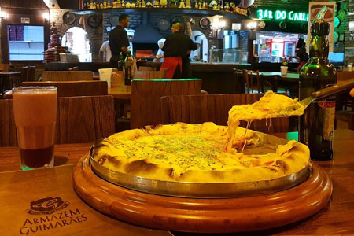
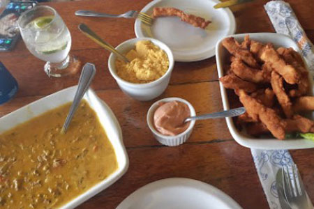
O Peixarão
Bairro: Jatiúca
A culinária brasileira regional de pescados diversos, caranguejo e chope, servida em salão e terraço aberto.
Stella Cantina & Pizzaria
Bairro: Jatiúca
Restaurante casual e boêmio com sacada tem espaço kids e pratos individuais da casa entre pizzas variadas.
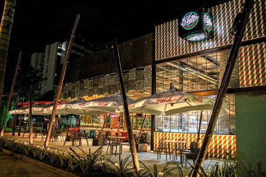
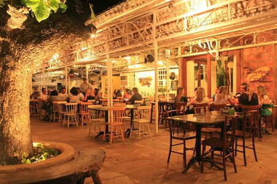
Divina Gula
Bairro: Jatiúca
Com frutos do mar, espetinhos, cervejas e drinques, mais pratos e ambiente mineiros, com charme e aconchego.
Affeto Gelato
Bairro: Ponta Verde
Sorveteria diferenciada no bairro Ponta Verde, onde os atrativos são os sorvetes e as casquinhas artesanais.
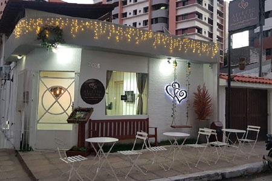
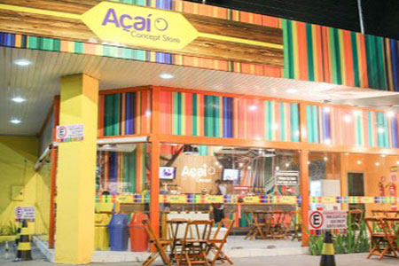
Açaí Concept
Bairro: Pajuçara
Açaí em diversos tamanhos com acompanhamentos como granola, frutas, paçoca e caldas, clima simples e casual.
Sorveteria Bali
Bairro: Pajuçara
Sorvetes finos servidos em balcão e consumidos em mesinhas externas, com a opção de shakes, iogurtes e cafés.
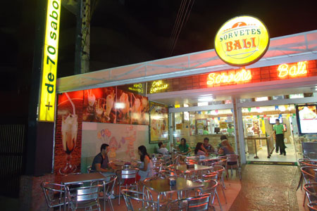
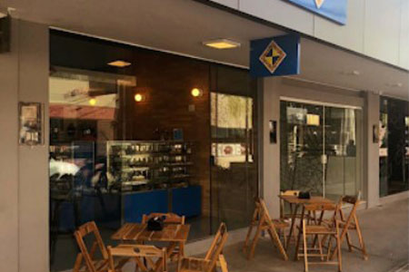
Tantã - Casa de Lanches
Bairro: Pajuçara
Confeitaria descontraída com mesinhas serve salgadinhos tradicionais, lanches seletos e quitutes variados.